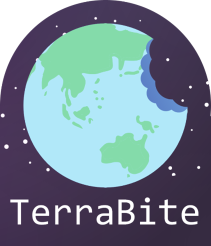
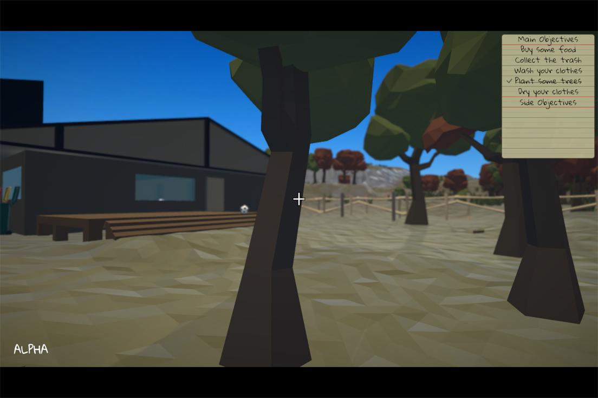

The Model Citizen By TerraBite


Developed for Murdoch University unit ICT371 as a client based project, The Model Citizen, targeted to educate players about how their choices could have a devastating effect the climate
The Model Citizen was developed by our group TerraBite consisting of:
Play online or offline or read the docs!